What Do You Know about Money in the World?
===============
China: Renminbi Yuan
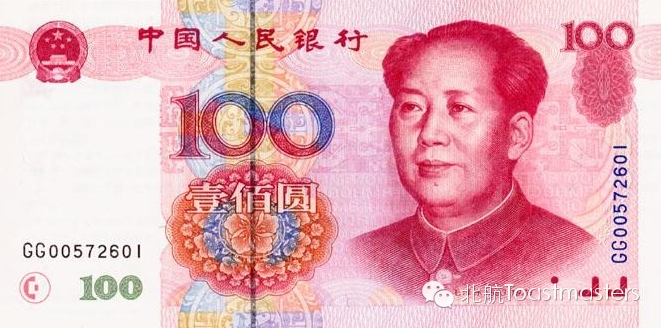
===================
Hongkong: Hongkong Dollar
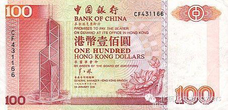
===============
Macao: Macao Pataca
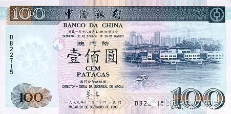
===============
Taiwan: Taiwan Dollar
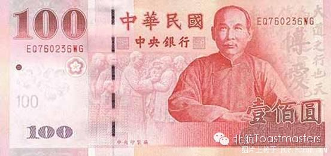
=============
India: Indian Rupee
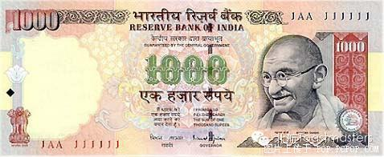
Japan: Japanese Yen
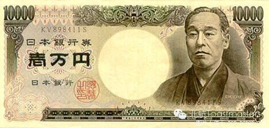
Korea: Korean Won
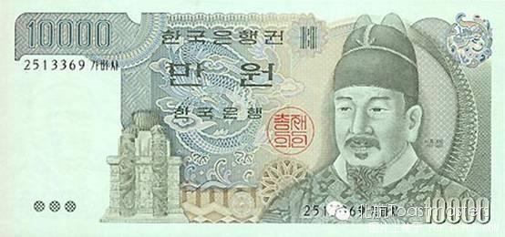
=============
Thailand: Thai Baht
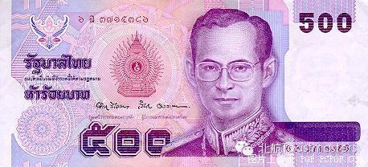
===================
Singapore: Singapore Dollar
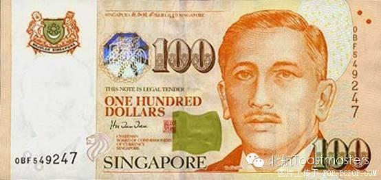
Australia: Australian Dollar
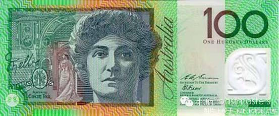
===============
Russia:
Russian Ruble
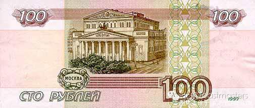
==================
Germany: Deutsche Mark
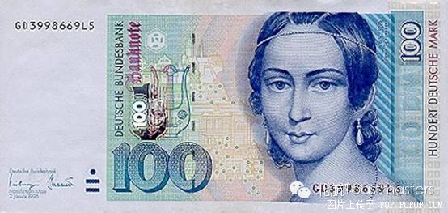
================
United Kingdom: Pound
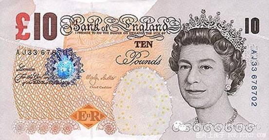
==============
France: French Franc
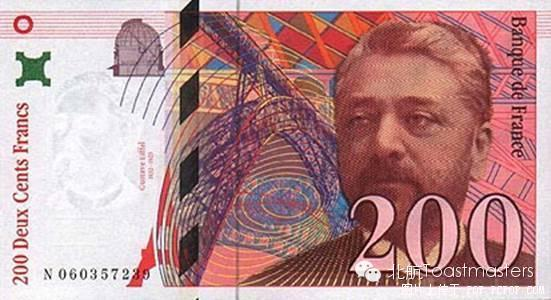
Canada: Canadian Dollar
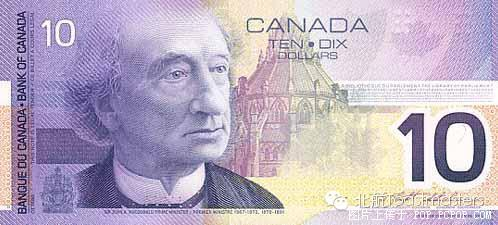